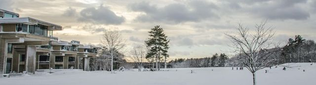

2018-02-13 08:00

Last week social networks were buzzing with reports that UMASS Dartmouth had rescinded the 2017 acceptance of a black student who had been honest about prior gang affiliations. Right after Martin Luther King day, and right in the middle of Black History month, a young black man had new options snatched away by nervous administrators at a campus in a lily-white community. At a campus meeting on Monday angry students voiced concerns about racism and fairness.
The university for its part shed absolutely no light on the issue. According to a campus spokesman, “We’re just not going to be engaged in a conversation about an admissions case about an individual student.” Whatever the actual facts, the university’s ham-handed refusal to discuss circumstances or safety concerns — or to engage in a “conversation” with students or the wider community — will with good reason be interpreted as a coverup of some good-old-fashioned racism, and less as the well-intentioned effort to keep students safe. The university might as well have invoked “national security.”
UMASS Dartmouth is a public university. Many of us studied there. Many of us know students, employees, faculty, ex-faculty, and regularly attend campus events. Before it joined the UMASS system it was very much a local university, and it still is. In every way it is our university. And the public is entitled to some answers. The administration must open up about the circumstances and reasoning behind changing its mind about this student. And it must publicly and transparently deal with concerns that this was racism again rearing its ugly head in the age of Trump.
Universities are full of people with all sorts of baggage. The UMASS university system was once run by Whitey Bulger’s brother. Despite suspicions he knew where his fugitive brother was hiding, it never seemed to keep William Bulger off a campus or prevent him from becoming president of the Massachusetts Senate. Plenty of white students have had offenses expunged from their records. But this particular student never had the same courtesy extended to him. Despite his best efforts to take a different path in life, this young black man has now been barred from the university for a past that men like him are never permitted to escape.